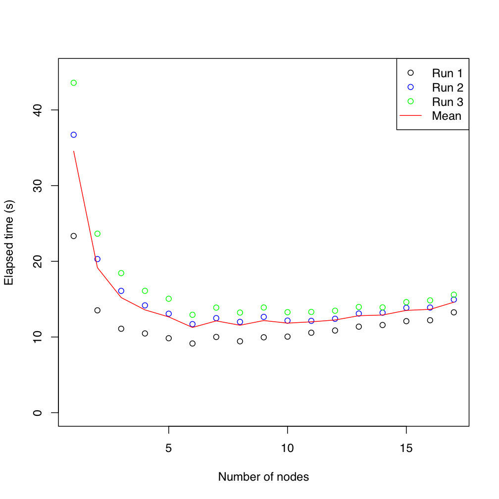
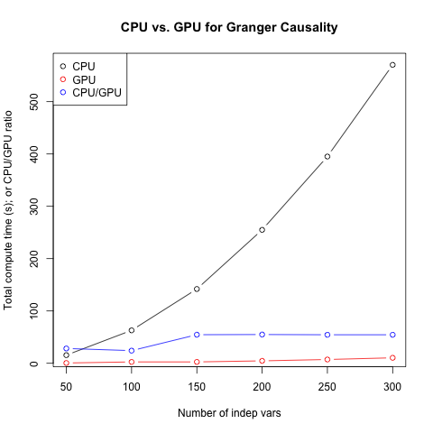

The Berkeley Political Science Compute Cluster
I am the administrator for the Berkeley Political Science department's 18-node compute cluster. For more information on the cluster, go to the cluster's homepage.
The image below shows tests for the speed improvement of Jas Sekhon's GenMatch algorithm scaled across 1-17 nodes.

Balance statistics and plots from GenMatch()
I've developed some code to produce tables and figures of balance statistics from the output of the MatchBalance routine in the Matching package for R. My code builds on the work of Rocio Titiunik and Charlie Gibbons.
You can download the code here. You can also clone the git repository here.To use it, source it in your R script via the source() function. More documentation is included in the comments section of the code.
Installing gputools for R on a Macbook Pro
The gputools package for R provides GPU-enabled versions of common functions in R. As the documentation at the gputools website shows, significant reductions in compute time are possible. Installing the packages on a Macbook Pro requires a little fiddling, which I've documented here. The figure below shows that you can achieve some substantial gains in speed even with the rather wimpy GPU (nVidia 9400m) that comes with the stock Macbook.
A full description of the installation is available here.
